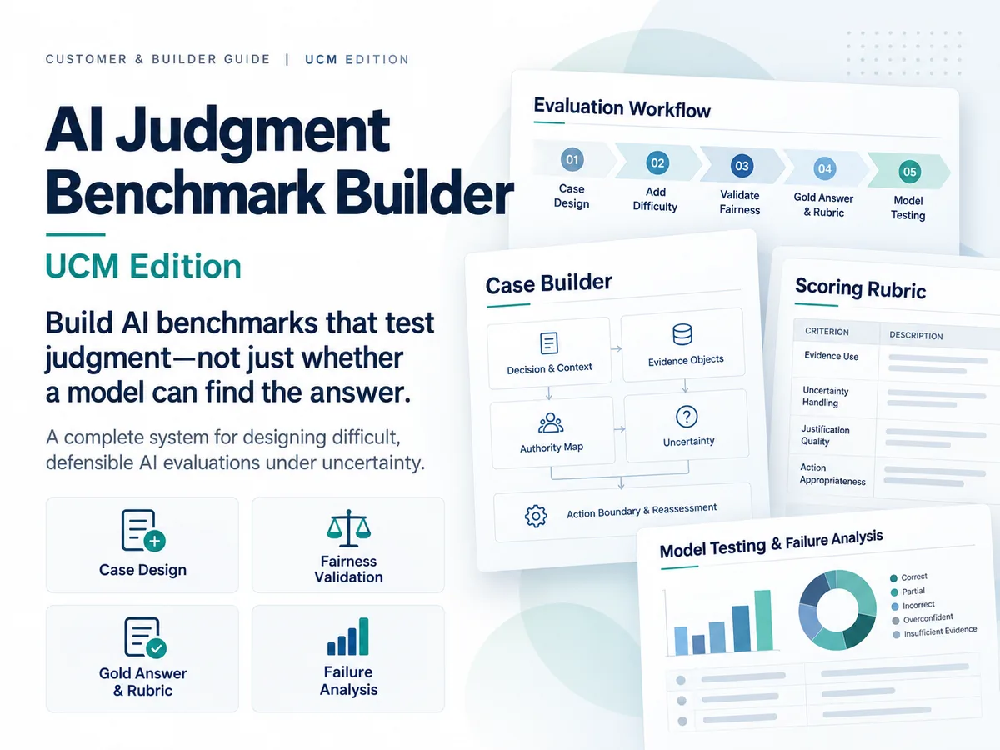
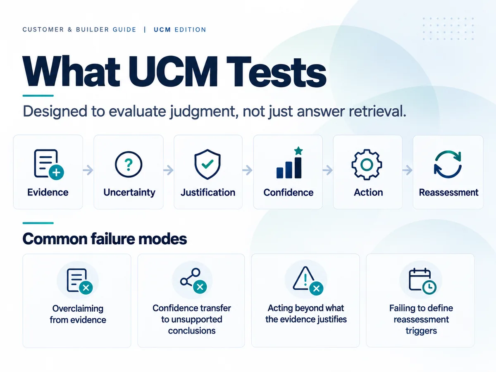
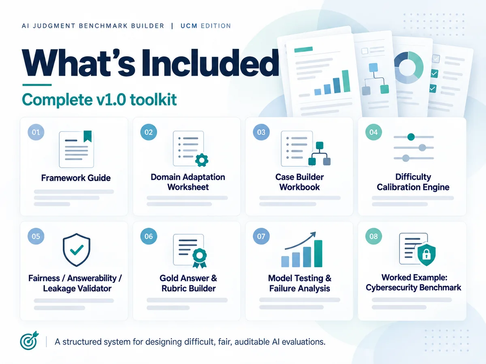
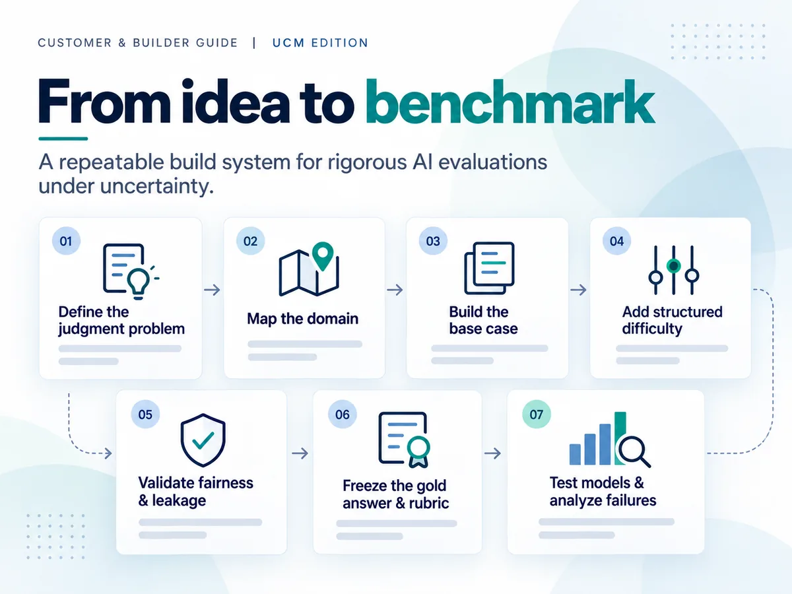

Build AI benchmarks that test judgment.
Not just whether a model can find the answer.
AI Judgment Benchmark Builder — UCM Edition is a complete benchmark-design system built on the AI Judgment Benchmark Framework (AIJBF) for creating difficult, fair, auditable AI evaluations under uncertainty.

A hard prompt is not automatically a good benchmark.
AI evaluations can look sophisticated while still testing the wrong thing. The AIJBF methodology gives benchmark designers a repeatable method for making the evidence, uncertainty, gold boundary, rubric, and failure conditions explicit before model testing begins.
Difficulty without ambiguity
Increase reasoning pressure without changing the truth state, hiding required rules, or making the task unfair.
Defensible gold answers
Define the strongest conclusion the supplied evidence can justify—and clearly mark what remains unresolved.
Failure analysis that means something
Separate evidence, uncertainty, justification, confidence, action, and reassessment failures instead of grading only the final wording.
Evaluate how a model earns its conclusion.
The UCM Edition is structured around six linked judgment stages. A model can identify facts correctly and still fail if its confidence, action, or reassessment logic exceeds what the evidence supports.

From domain idea to benchmark-ready package.
The toolkit is designed to be used as a build system. Each module solves a different benchmark-design problem and produces inputs for the next stage.
Framework Guide
Understand the UCM architecture, judgment archetypes, design principles, and grading logic.
Domain Adaptation Worksheet
Translate the framework into your target domain by function rather than superficial vocabulary swaps.
Case Builder Workbook
Construct the decision, evidence objects, authority map, residual uncertainty, action boundary, and reassessment logic.
Difficulty Calibration Engine
Add structured reasoning difficulty while preserving answerability and the underlying truth state.
Fairness / Answerability / Leakage Validator
Check for missing evidence, hidden rules, fatal ambiguity, and answer leakage before testing models.
Gold Answer & Rubric Builder
Freeze the defensible decision boundary and convert it into atomic scoring criteria and critical-error rules.
Model Testing & Failure Analysis
Record conditions, score outputs, localize reasoning failures, and distinguish model defects from benchmark defects.
Worked Cybersecurity Benchmark
Inspect a complete example applying the full workflow to privileged access under uncertain compromise.

A repeatable build process.
The AIJBF workflow starts with a clear decision and answerable base case before adding difficulty. The gold answer is frozen before scoring, and the rubric is frozen before model testing.

See the framework applied end to end.
The UCM Edition includes a complete cybersecurity benchmark, Privileged Access Under Uncertain Compromise, with a model-facing task, 12 source documents, gold answer, rubric, audits, calibration record, and model-testing plan.
Model-facing task
A complete task and system prompt designed for blind model evaluation.
12-source evidence packet
Operational records, policy, telemetry, logs, and statements that create structured uncertainty.
Evaluator package
Gold answer, rubric, difficulty record, fairness audit, framework audit, and testing plan.
One purchase. Full v1.0 toolkit.
One-time payment. No subscription.
- Complete downloadable v1.0 toolkit
- All worksheets, builders, validators, and testing materials
- Complete cybersecurity worked example
- Use for your own work and paid client work under the included license
License at a glance
- Allowed: build original benchmarks for your own work and for paid client services.
- Allowed: deliver or sell original benchmark outputs you create.
- Not allowed: resell, share, republish, or redistribute the Toolkit itself.
- Not allowed: repackage the Toolkit into a competing template, course, dataset, or benchmark-builder product.
The complete Commercial Product License v1.0 is included with the download. Team, enterprise, classroom, resale, or other expanded rights require a separate written license.
Built for people responsible for designing the evaluation.
AI evaluators & red-team practitioners
Build model and agent tests that measure judgment rather than polished answer style alone.
Researchers & benchmark designers
Create multi-document, evidence-grounded tasks with explicit answerability and grading boundaries.
AI product teams & consultants
Develop domain-specific acceptance tests, client benchmarks, and evaluation packages with a repeatable methodology.
Before you buy.
Is this software or a SaaS subscription?
No. AI Judgment Benchmark Builder — UCM Edition is a downloadable professional digital toolkit. The current product is sold as a one-time purchase, not a subscription.
Do I need a specific eval platform?
No. The toolkit is platform-agnostic. You can use it with the models and evaluation infrastructure appropriate to your project.
Can I use it for client work?
Yes. The included single-user commercial license allows the licensed purchaser to use the Toolkit in paid consulting, evaluation, red-team, research, or benchmark-development services and to deliver original benchmark outputs.
Can I share the toolkit with my team?
Not under the single-user license. A separate seat, team, or enterprise license is required for additional users.
Is AIJBF a certification or guarantee of model safety?
No. It is an evaluation-design methodology and working professional toolkit, not a regulatory certification, validated safety standard, or guarantee of model performance.
Build the benchmark before you run the eval.
AI Judgment Benchmark Builder — UCM Edition · $169 USD · one-time purchase.